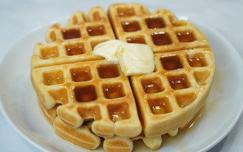

Homemade Waffle Recipe

Ingredients
- 2 eggs
- 2 cups all-purpose flour
- 1 3/4 cups milk
- 1/2 cup vegetable oil
- 1 tablespoon sugar
- 4 teaspoons baking powder
- 1/4 teaspoon salt
- 1 teaspoon vanilla extract (optional)
Instructions
- Separate the egg whites from the yolks. Beat the egg whites until stiff peaks form.
- In a separate bowl, mix together the egg yolks, milk, vegetable oil, and vanilla extract (if using).
- In another bowl, combine the flour, sugar, baking powder, and salt.
- Gradually add the dry ingredients to the egg yolk mixture, alternating with the milk, until smooth.
- Carefully fold in the beaten egg whites into the batter, gently stirring to maintain the lightness of the batter.
- Preheat your waffle iron according to manufacturer's instructions.
- Pour a portion of the batter onto the hot waffle iron and cook until golden and crispy.
- Serve the homemade waffles hot, topped with honey, fresh fruits, maple syrup, or your favorite toppings.
Tips
- For a healthier version, substitute some of the all-purpose flour with oat flour.
- For crispier waffles, allow them to cook a bit longer in the waffle iron.
- Add chopped chocolate, blueberries, or nuts to the batter before cooking to create different flavored waffles.